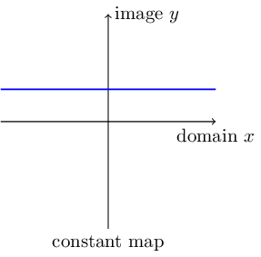
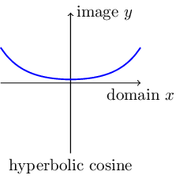
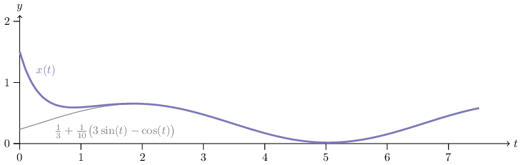

20210927
This document is intended to serve bith for training and for future reference. As a reference document, you may find it useful for the first biomaths class (3BS, Fall semester) and for linear algebra (3BIM, Winter Semester).
When important concepts are encoutered for the first time, they highlighted in bold next to their definition. Exercises are important, they can introduce theory or techniques that will be prove useful. We tried to make the examples as complete as possible. This means that they are long, you could probably solve them faster.
A function is a relation, denoted in general \(f\), that associate an element \(x\) belonging to a domain \(I\), and at most an element \(y\) of the image \(J\). The domain \(I\) and \(J\) are sets, usually \(I, J \in \mathbb{R}\).
A map is a relation that associate each element of its domain to exactly one element of its image. Maps and functions are related but slightly different concepts. A function \(f\) is a map if it is defined for all elements of of its domain \(I\). A map is always a function, but the term can also be used when the domain or the image are not numbers (Figure 1).
The graph of a function \(f\), denoted \(\mathcal{G}(f)\) is the set of all pairs \((x, f(x))\) in the \(I \times J\) plane. For real-valued functions, the graph is represented in the Cartesian plane.
Functions are not numbers. Do not confuse
\(f\) the function
\(f(x)\) the evaluation of \(f\) at element \(x\); \(f(x)\) is an element of the image (usually a number)
\(\mathcal{G}(f)\) the graph of \(f\).
Consequently, never write
\(f(x)\) is increasing... but write \(f\) is increasing...
\(f(x)\) is decreasing... but write \(f\) is decreasing...
\(f(x)\) is continuous... but write \(f\) continuous...
\(f:\mathbb{R} \to \mathbb{R}\), with \(x \to k\), \(k \in \mathbb{R}\) constant; \(x \to x\), identity map.

\(f:\mathbb{R}\backslash\{0\} \to \mathbb{R}\), with \(x \to \frac 1x\), inverse.
\(f:\mathbb{R} \to \mathbb{R}\), with \(x \to x^2\), parabola; \(x \to x^3\), cubic function.
\(f:\mathbb{R}^+ \to \mathbb{R}\), with \(x \to \sqrt{x} = x^{\frac 12}\), square root; more generally with \(x \to x^{\frac pq} = {}^q\sqrt{x^p}\), fractional power.
\(f:\mathbb{R}\backslash\{-d/c\} \to \mathbb{R}\), with \(x \to \frac{ax + b}{cx + d}\).
\(f:\mathbb{R} \to \mathbb{R}\), with \(x \to \exp(x)\), exponential.
\(f:\mathbb{R}^+\backslash\{0\} \to \mathbb{R}\), with \(x \to \ln(x)\), natural logarithm.
On logarithms: For \(a, b >0\), \(n\) positive integer, \(\ln(ab) = \ln(a) + \ln(b)\), \(\ln(a^n) = n \ln(a)\), \(\ln(a/b) = \ln(a) - \ln(b)\).
\(f:\mathbb{R} \to \mathbb{R}\), with \(x \to \cos(x)\), cosine; \(x \to \sin(x)\), sine; \(x \to \tan(x)\), tangent.
On trigonometric functions. In the diagram below is shown the relationship between sine, cosine and tangent, of a angle \(\theta\).
\(f:\mathbb{R} \to \mathbb{R}\), with \(x \to \cosh(x) = \frac 12 \bigl( e^{x} + e^{-x} \bigr)\), hyperbolic cosine; \(x \to \sinh(x) = \frac 12 \bigl( e^{x} - e^{-x} \bigr)\), hyperbolic sine; \(x \to \tanh(x) = \frac{\sinh(x)}{\cosh(x)}\), hyperbolic tangent.

We call the derivative of the function \(f:I \to J\) (\(I,J \subset \mathbb{R}),\), at point \(a \in I\) the limit, if it exists, \[\lim_{x \to a} \frac{f(x) - f(a)}{x - a}.\] The derivative is denoted \(f'(a)\). An alternative representation of the limit is obtained by setting \(h = x - a\), \[f'(a) = \lim_{h \to 0} \frac{f(a + h) - f(a)}{h}.\] If the derivative exists for all elements \(a \in I\), we say that differentiable on \(I\).
If \(f\) is differentiable on \(I\), and \(f'(x) > 0\), then \(f\) is strictly increasing on \(I\).
If \(f\) is differentiable on \(I\), and \(f'(x) < 0\), then \(f\) is strictly decreasing on \(I\).
However, if \(f\) is strictly increasing, it does not mean that \(f'(x) > 0\). For example the function \(f\) with \(f(x) = x^3\) is strictly increasing on \(\mathbb{R}\), but \(f'(0) = 0\). Where the derivative exists, we can define the derivative function \(f':I \to \mathbb{R}\) of \(f\).
The second derivative of a function \(f\), denoted \(f''\) is the derivative of \(f'\), where defined. If \(f''(x)\) exists and \(f''(x) > 0\) for all \(x \in I\), we say that \(f\) is convex (U-shaped). If \(f'(x) = 0\) and \(f''(x) > 0\), the point \(x\) is a minimum. If \(f'(x)\) and \(f''(x) < 0\), the point \(x\) is a maxmimum. Maxima and minima are extrema. If \(f''(0) = 0\), the point \(x\) is an inflection point (Figure 2).
The derivative is linear. If \(f\) and \(g\) are differentiable on \(I\), and \(a \in \mathbb{R}\),
\((f + g)' = f' + g'\).
\((af)' = a (f')\).
\((af + g)' = a (f') + g'\).
The derivative follow the rule of composed functions. If \(g:I \to J\) and \(f:J \to K\), then \(f \circ g\) is function \(x \to f(g(x))\). If \(f\) and \(g\) are differentiable, the derivative \[\bigl( f \circ g \bigr)'(x) = f'(g(x))g'(x).\]
Example Let \(f:x \to x^2\) and \(g:x \to 3x + 1\), two differentiable functions, with \(f'(x) = 2x\) and \(g'(x) = 3\). The derivative of the composed function \(f \circ g\) at \(x\) is \[f'(g(x))g'(x) = f'(3x+1)g'(x) = 2(3x+1) \cdot 3 = 6(3x+1) = 18x + 6.\] The derivative could have been obtained by computing the composed function \(f(g(x)) = (3x+1)^2 = 9 x^2 + 6x + 1\).
Example Compute the derivative of \(f: x \to \sin(1/x)\). The function \(f\) is composed of a sine and an inverse function. To compute the derivative, we decomposed the function \(f\) as \(f(x) = g(h(x))\) with \(g(x) = \sin(x)\) and \(h(x) = 1/x\). The derivatives \(g'(x) = \cos(x)\) and \(h'(x) = -1/x^2\). \[f'(x) = g'(h(x))h'(x) = \cos(1/x) \Bigl( \frac{-1}{x^2} \Bigr) = - \frac{\cos(1/x)}{x^2}.\]
Example A function \(f\) is bijective (invertible) if there exists a function, denoted \(f^{-1}\), such that \(f \circ f^{-1} = f^{-1} \circ f\) is the identity map. If \(f\) is differentiable and invertible, what is the derivative of \(f^{-1}\)?
We apply the derivative to \(f(f^{-1})\). Given that \(f(f^{-1}(x)) = x\) by definition, we have \(\bigl( f(f^{-1}) \bigr)' = 1,\) and \[\begin{aligned} \bigl( f(f^{-1}) \bigr)'(x) & = f'(f^{-1}(x))(f^{-1})'(x), \\ & = 1, \\ (f^{-1})'(x) & = \frac{1}{f'(f^{-1}(x))}.\end{aligned}\] Take for instance \(f(x) = x^2\) on \(x \in (0,1]\). The inverse is \(f^{-1}(x) = \sqrt{x}\). The derivative of \(f\) is \(f(x) = 2x\) and the derivative \[f^{-1}(x) = \frac{1}{f'(f^{-1}(x))} = \frac{1}{2(\sqrt{x})}.\]
| Function | Derivative | Note |
|---|---|---|
| \(x^a\) | \(ax^{a-1}\) | \(a \in \mathbb{R}\) |
| \(\frac{1}{x}\) | \(\frac{-1}{x^2}\) | |
| \(x^{\frac 12}\) | \(\frac{1}{2x^{\frac 12}}\) | |
| \(\ln(x)\) | \(\frac 1x\) | |
| \(e^x\) | \(e^x\) | |
| \(\cosh(x)\) | \(\sinh(x)\) | |
| \(\sinh(x)\) | \(\cosh(x)\) | |
| \(\cos(x)\) | \(-\sin(x)\) | |
| \(\sin(x)\) | \(\cos(x)\) | |
| \(\dfrac{u(x)}{v(x)}\) | \(\dfrac{v(x)u'(x) - u(x)v'(x)}{v^2(x)}\) | |
| \(u(x) v(x)\) | \(u'(x)v(x) + u(x)v'(x)\) |
A complex number is a number that can be expressed in the form \(a + i b\), where \(a\) and \(b\) are real numbers, and the symbol \(i\) is called imaginary unit. The imaginary unit satisfies the equation \(i^2 = -1\). Because no real number satisfies this equation, this number is called imaginary.
For the complex number \(z = a + i b\), \(a\) is called the real part and \(b\) is called the imaginary part. The real part of \(z\) is denoted \(\Re(z)\) (\Re in LaTeX) or just \(\mathrm{Re}(z).\) The imaginary part of \(z\) denoted \(\Im(z)\) (\Im in LaTex) or just \(\mathrm{Im}(z)\). The set of all complex numbers is denoted \(\mathbb{C}\) (\mathbb{C} in LaTeX).
We need complex numbers for solving polynomial equations. The fundamental theorem of algebra asserts that a polynomial equation of with real or complex coefficients has complex solutions. These polynomial equations arise when trying to compute the eigenvalues of matrices, something we need to do to solve linear differential equations for instance.
Arithmetic rules that apply on real numbers also apply on complex numbers, by using the rule \(i^2 = -1\): addition, subtraction, multiplication and division are associative, commutative and distributive.
Let \(u = a + i b\) and \(v = c + i d\) two complex numbers, with real coefficients \(a,b,c,d\). Then
\(u + v = a + i b + c + i d = (a+c) + i (b+d)\).
\(uv = (a + i b)(c + i d) = ac + i a d + i b c + i^2 b d = ac - bd + i(ad + bc)\).
\(\frac{1}{v} = \frac{1}{c + i d} = \frac{c - id}{(c - id)(c + id)} = \frac{c - id}{c^2 + d^2} = \frac{c}{c^2 + d^2} - i \frac{d}{c^2+d^2}\).
\(u = v\) if and only if \(a = c\) and \(b = d\).
It follows from the rule on \(i\) that
\(\frac 1i = -i.\) (Proof: \(\frac 1i = \frac{i}{i^2} = \frac{i}{-1} = -i\).)
Multiplying by the imaginary unit \(i\) is equivalent to a counterclockwise rotation by \(\pi/2\) (Figure 3) \[ui = (a + ib)i = ia + i^2 b = -b + ia.\]
Let \(z = a + ib\) a complex number with real \(a\) and \(b\). The conjugate of \(z\), denoted \(\bar z\), is \(a - ib\). The conjugate of the conjugate of \(z\) is \(z\) (reflection, Figure 3). The modulus of \(z\), denoted \(|z|\) is \(\sqrt{z \bar z}\). The product \(z \bar z = (a+ib)(a-ib)=a^2 + b^2 + i(-ab + ab) = a^2 + b^2\). The modulus is the complex version of the absolute value, for if \(z\) (i.e. \(b = 0\)), \(|z| = \sqrt{a^2} = |a|\). It is always a real, positive number, and \(|z| = 0\) if and only if \(z = 0\). The modulus also has the property of being the length of the complex number \(z\), if \(a\) and \(b\) are the sides of a rectangular triangle, then \(|z|\) is the hypotenuse.
When simplifying a ratio involving a complex \(v\) at the denominator, it is important to convert it to a real number by multiplying the ratio by \(\bar v/ \bar v\). For instance, if \(v \neq 0\), \[\frac{u}{v} = \frac{u \bar v}{u \bar v} = \frac{u \bar v}{|v|^2}.\] The denominator \(|v|^2\) is always a positive real number.
By allowing complex values, nonlinear functions of real numbers like exponentials, logarithms and trigonometric functions can have their domain extended to all real and complex numbers. The most useful extension is the exponential function. Recall that the exponential function \(e^x\), where \(e \approx 2.71828\) is Euler’s constant, satisfies the relation \(e^{x + y} = e^{x} e^{y}\). This remains true for complex numbers. The Euler’s formula relates the exponential of a imaginary number with trigonometric functions. For a real number \(y\), \[e^{i y} = \cos(y) + i \sin(y).\] Therefore, for any complex number \(z = a + i b\), the exponential \[e^{z} = e^{a + ib} = e^a e^{ib} = e^a \bigl( \cos(b) + i \sin(b) \bigr).\]
Tips on complex numbers
If \(x\) is real, \(ix\) is pure imaginary. If \(y\) is imaginary, \(iy\) is real.
\(|i| = 1\). For any real \(\theta\), \(|e^{i \theta}| = 1\).
\(|z_1 z_2| = |z_1| |z_2|\).
In particular, \(|iz| = |i||z| = |z|\). (Multpliying by \(i\) is a rotation in the complex plane, it does not change the modulus.)
For complex numbers, the equation \(z^n = 1\) has \(n\) solutions. They are called the root of unity. For \(n=2\), we have the well-known roots \(z = \pm 1\), which are real. What are the roots of \(z^3 = 1\)? To find them, we express \(z\) in polar coordinates: \(z = r e^{i\theta}\). Then \[z^3 = (r e^{i\theta})^3 = r^3 e^{i 3\theta} = 1.\] The equation implies that \(z\) has modulus 1, so \(r = 1\). The remaining term \(e^{i 3\theta} = 1\) implies that \(3 \theta\) is a multiple of \(2 \pi\) because \(e^{i \omega} = 1\) if and only if \(\omega = 2 k \pi\), for some integer \(k\). Therefore \(\theta = \frac{2}{3} k \pi\), for \(k = 0, 1, 2, ...\). How many distinct points do we have? Clearly, \(k = 3\) is equivalent to \(k = 0\): \(e^{i \frac{2}{3} 3 \pi} = e^{i 2 \pi} = e{i 0}\). In the same way \(k = 4\) is equivalent to \(k = 1\), and so on. Therefore, there are exactly three distinct solutions for \(\theta\): \(0, \frac{2}{3} \pi, \frac{4}{3} \pi\) (Figure 5).
Exercice Let the complex number \(z = 2 + 3 i\). Compute \(\bar z\), \(|z|\), \(|\bar z|\) (compare with \(|z|\)), \(z^2\), \(\Re(\bar z)\) , \(\Im(\bar z)\), \(\frac{z + \bar z}{2}\) , \(\frac{z - \bar z}{2}\) , \(-z\), \(iz\).
Correction \(\bar z = 2 - 3i\), \(|z| = \sqrt{2^2 + 3^2} = \sqrt{13}\), \(|\bar z| = \sqrt{2^2 + (-3)^2} = \sqrt{13}\), we see that \(|z| = |\bar z|\), \(\Re(\bar z) = 2\), \(\Im(\bar z) = -3\), \(\frac{z + \bar z}{2} = (2 + 3i + (2 - 3i))/2 = 2\), \(\frac{z - \bar z}{2} = ((2 + 3i - (2 - 3i))/2 = 3i\), \(-z = -2 - 3i\), \(iz = 2i + 3i^2 = -3 + 2i\).
Exercice Any complex number can be represented in polar form: \(z = r ( \cos(\theta) + i \sin(\theta) )\).
Show that \(|z| = r\)
Show that \(z = r e^{i \theta}\)
Conclude that for any complex number \(z\), \(|z| = 1\) if and only if \(z\) can be expressed as \(z = e^{i \theta}\) for a real \(\theta\).
Correction The modulus of \(z\) is \(|z| = \sqrt{r^2 \cos^2 (\theta) + r^2 \sin^2 (\theta)} = \sqrt{r^2} = r.\) From Euler’s formula, we have \(\cos(\theta) + i\sin(\theta) = e^{i\theta}\), so \(z = re^{i\theta}.\) Therefore, for any complex number \(z = r e^{i\theta}\), \(|z| = 1\) if and only if \(r = 1\).
Exercice Using Euler’s formula, show that \(\cos(a)\cos(b) - \sin(a)\sin(b) = \cos(a+b)\). (Use the property that \(e^{ia + ib} = e^{ia} e^{ib}\) and apply Euler’s Formula).
Correction All trigonometric identities can be obtained by applying Euler’s formula. Here we start from \(e^{ia + ib} = \cos(a+b) + i \sin(a+b)\). We only want the real part, \[\begin{aligned} \cos(a + b) & = && \frac{e^{ia + ib} + e^{-ia - ib}}{2} \\ & = && \frac{e^{ia} e^{ib} + e^{-ia} e^{-ib}}{2} \\ & = && \frac{(\cos(a) + i \sin(a))(\cos(b)+ i \sin(b)) + (\cos(a) - i \sin(a))(\cos(b) - i \sin(b))}{2} \\ & = && \frac{\cos(a)\cos(b) + i^2 \sin(a)\sin(b) + i \cos(a)\sin(b) + i \cos(b)\sin(a)}{2} \\ & && + \frac{\cos(a)\cos(b) + i^2 \sin(a)\sin(b) - i \cos(a)\sin(b) - i \cos(b)\sin(a)}{2} \end{aligned}\] The mixed cosine-sine terms cancel each other while the other ones add up, resuling in \[\begin{aligned} \cos(a + b) = \cos(a)\cos(b) - \sin(a)\sin(b).\end{aligned}\]
Exercice Show Euler’s identity: \(e^{i \pi} = -1\).
Correction This is a direct application of Euler’s formula: \(e^{i \pi} = \cos(\pi) + i \sin(\pi) = -1.\)
Exercice What are the roots of the equation \(z^6 = 1\)?
Correction The roots must satisfy \(e^{i 6 \theta} = 1\). This means that \(\theta = \frac{2}{6} k \pi\), for \(k = 0, 1, ..., 5\). There are six distinct roots.
Exercice For a complex \(z\), find necessary and sufficient conditions for \(e^{z t}\), \(t > 0\), to converge to 0.
Correction The exponential converges to zero if and only if \(\Re(z) < 0\). A complex number is close to zero if and only if its modulus is close to zero. Therefore, to show that a quantity converges to zero, it is necessary and sufficient to show that its modulus converges to zero. If \(z = a + ib\), the exponential \(e^{z t} = e^{(a + ib)t} = e^{at} e^{ibt}.\) The modulus \(|e^{ibt}| = 1\), so \(|e^{zt}| = e^{at}\) (no need for absolute values, the exponential of a real number is always positive). The condition for convergence to zero is therefore a condition on the real part of \(z\): \(e^{at} \to 0\) when \(t \to \infty\) if and only if \(a < 0\).
Exercice Let the complex number \(z = a + ib\) with real \(a\) and \(b\). Compute \(\sqrt{z}\) (that is, express \(s = \sqrt{z}\) as \(s = \alpha + i \beta\), with real \(\alpha\) and \(\beta\))

Correction The square root of a complex number always exists. Express \(z\) in polar form \(z = re^{i\theta}\), \(r \geq 0, \theta \in [0, 2\pi]\). The square root \(\sqrt{z} = \sqrt{r}\sqrt{e^{i\theta}} = \sqrt{r} e^{\frac 12 i \theta}\). Using Euler’s formula, \(\sqrt{z} = \sqrt{r} \cos(\theta/2) + i \sqrt{r} \sqrt{\theta/2}\). That is, the square root is obtained by taking the square root of the modulus \(r\), and dividing the angle (the argument) by 2. There is a problem with this solution, because \(z\) can also be represented by \(re^{i\theta + 2\pi}\), giving \(\sqrt{z} = \sqrt{r} e^{\frac 12 i\theta + \pi}\), which is equivalent to dividing the angle by two in the other direction. We define the principal square root as the solution that makes the smallest change in angle: \(\sqrt{z} = \sqrt{r} e^{\frac 12 i\theta}\) if \(\theta \in [0,\pi]\), and \(\sqrt{z} = \sqrt{r} e^{\frac 12 i\theta + \pi}\) if \(\theta \in (\pi,2\pi]\) To express the solution in terms of the original form of \(z = a + i b\), we express the square root \(s = \alpha + i \beta\). Then \(s^2 = \alpha^2 - \beta^2 + 2i \alpha \beta = z = a + ib.\) By identifying the real and imaginary parts, we get two equations: \(\alpha^2 - \beta^2 = a\) and \(2 i \alpha \beta = b.\) Denoting the modulus of \(z\) by \(r = \sqrt{a^2 + b^2}\), we can obtain the solutions \[\alpha = \frac{1}{\sqrt{2}}\sqrt{a + r}, \quad \beta = \mathrm{sign}(b) \frac{1}{\sqrt{2}} \sqrt{-a + r}.\]
A \(2 \times 2\) matrix \(A\) is an array with 2 rows and 2 columns: \[A = \begin{pmatrix} a & b \\ c & d \end{pmatrix}.\] Usually, the coefficients \(a, b, c, d\) are real numbers. The identity matrix is the matrix \[I = \begin{pmatrix} 1 & 0 \\ 0 & 1 \end{pmatrix}.\]
The determinant of \(A\), denoted \(\det A\) or \(|A|\) is the number \(ad - bc\). The trace of \(A\), denoted \(\mathrm{tr}\,A\), is the sum of the main diagonal of \(A\): \(a + d\).
The characteristic polynomial of \(A\) is the second order polynomial in \(\lambda\) obtained by computing the determinant of the matrix \(A - \lambda I\) (Figure 6), \[\det ( A - \lambda I ) = (a-\lambda)(d-\lambda) - bc = ad - bc - \lambda ( a + d ) + \lambda^2.\] The characteristic polynomial \(p_A(\lambda)\) of \(A\) can be expressed in terms of its determinant and trace: \[p_A(\lambda) = \det A - \mathrm{tr}\,A \lambda + \lambda^2.\] The eigenvalues of \(A\) are the roots of the characteristic polynomial. By the fundamental theorem of algebra, we know that the characteristic polynomial has exactly two roots, counting multiple roots. These roots can be real, or complex. The eigenvalues of \(A\) are calculated using the quadratic formula: \[\lambda_{1,2} = \frac{1}{2} \Bigl( \mathrm{tr}\,A \pm \sqrt{ (\mathrm{tr}\,A)^2 - 4 \det A } \Bigr).\]
From this formula, we can classify the eigenvalues of \(A\). Let \[\Delta = (\mathrm{tr}\,A)^2 - 4 \det A\] the discriminant of the quadratic formula. The two eigenvalues of \(A\) are real if and only if \(\Delta \geq 0\), i.e. \(\mathrm{tr}\,A)^2 \geq 4 \det A\) Then we have the following properties (Figure 7):
\(\Delta < 0\), complex eigenvalues
The two eigenvalues are complex conjugate: \(\lambda_1 = \bar \lambda_2\)
Their real part \(\Re(\lambda) = \frac{1}{2} \mathrm{tr}\,A\).
\(\Delta = 0\), there is a single root of multiplicity 2: \(\lambda = \frac{1}{2} \mathrm{tr}\,A\).
\(\Delta > 0, \det A > 0\), real, distinct eigenvalues of the same sign.
\(\mathrm{tr}\,A > 0\) and \(\det A > 0\). Then \(\lambda_{1,2}\) are distinct and positive.
\(\mathrm{tr}\,A < 0\) and \(\det A > 0\). Then \(\lambda_{1,2}\) are distinct and negative.
\(\det A < 0\), real distinct eigenvalues of opposite sign.
\(\lambda_1 < 0 < \lambda_2\).
\(\det A = 0\) one of the eigenvalue is zero, the other eigenvalue is \(\mathrm{tr}\,A\).
Exercice Properties of the eigenvalues of \(2 \times 2\) matrices. For each \(2 \times 2\) matrix, compute the determinant, the trace, and the discriminant, and determine whether the eigenvalues are real, complex, distinct, and the sign (negative, positive, or zero) of the real parts.
\[A_1 = \begin{pmatrix} 0 & -1 \\ 1 & 0 \end{pmatrix}, \quad A_2 = \begin{pmatrix} -2 & 1 \\ 1 & -2 \end{pmatrix}, \quad A_3 = \begin{pmatrix} 1 & -2 \\ 0 & 1 \end{pmatrix}, \quad A_4 = \begin{pmatrix} -1 & 2 \\ 1/2& 2 \end{pmatrix}.\]
A matrix defines a linear transformation between vector spaces. Given a vector \(x\), the product \(Ax\) is vector composed of linear combinations of the coefficients of \(x\). For a matrix \(2 \times 2\), the vector \(x\) must be a vector of size 2, and the product \(Ax\) is a vector of size two. If \(x = (x_1, x2)^t\) (the \({}^t\) stands for the transpose, because \(x\) must be a column vector), and \(A = [ a_{ij} ]_{i=1,2, \, j=1,2}\), then \[Ax = \begin{pmatrix} a_{11} & a_{12} \\ a_{21} & a_{22} \end{pmatrix} \begin{pmatrix} x_{1} \\ x_{2} \end{pmatrix} = \begin{pmatrix} a_{11} x_{1} + a_{12} x_2 \\ a_{21} x_{1} + a_{22} x_2 \end{pmatrix}.\] Successive linear transformations can be accomplished by applying several matrices. Given two matrices \(A, B\), the matrix product \(C = AB\) is also a matrix. The matrix \(C\) is the linear transformation that first applies \(B\), then \(A\). Matrix product is *not* commutative is general: \(AB \neq BA\). *(If \(B\) means ’put on socks’ and \(A\) means ’put on shoes’, then \(BA\) does not have the expected result.)* The product of two matrices \(A = [ a_{ij} ]_{i=1,2, \, j=1,2}\) and \(B = [ b_{ij} ]_{i=1,2, \, j=1,2}\) is \[AB = \begin{pmatrix} a_{11} & a_{12} \\ a_{21} & a_{22} \end{pmatrix} \begin{pmatrix} b_{11} & b_{12} \\ b_{21} & b_{22} \end{pmatrix} = \begin{pmatrix} a_{11} b_{11} + a_{12}b_{21} & a_{11}b_{12} + a_{12}b_{22} \\ a_{21} b_{11} + a_{22}b_{21} & a_{21}b_{12} + a_{22}b_{22} \end{pmatrix}.\] The sum of two matrices \(A+B\) is performed element-wise: \(A+B = [a_{ij} + b_{ij}]_{i=1,2, \, j=1,2}\). The sum of two vectors is defined similarly. Addition is commutative. Matrix operations are associative and distributive. \[\begin{aligned} A + B & = B + A, \\ A(B + C) & = AB + BC, \\ A(BC) & = (AB)C. \end{aligned}\] Matrices and vectors can be multiplied by a scalar value (real or complex). Multiplication by a scalar is associative, distributive, and commutative. The result of the multiplication by a scalar is to multiply each coefficient of the matrix or vector by the scalar. For example, if \(\lambda, \mu\) are scalars, \[\begin{aligned} \lambda A & = A (\lambda I) = A \lambda, \\ \lambda ( A + B ) & = \lambda A + \lambda B, \\ (\lambda A) B & = \lambda (AB) = A (\lambda B), \\ (\mu + \lambda) A & = \mu A + \lambda A, \\ \mu (\lambda A) & = (\mu \lambda) A, ...\end{aligned}\] The product between two column vectors is not defined, because the sizes do not match. However, we can define the scalar product between two column vectors \(x, y\) in the same way matrix product is defined: \[x^ty \equiv x_1 y_1 + x_2 y_2.\]
If the vectors are complex-valued, we need also to conjugate the transposed vector \(x^t\). The conjugate-transpose is called the adjoint and is denoted \({}^*\). Thus, if \(x\) is complex-valued, the adjoint \(x^*\) is the row vector \((\bar x_1, \bar x_2)\). The scalar product for complex-valued vectors is denoted \(x^*y\). Since this notation also works for real-valued vector, we will used most of the time.
Two vectors are orthogonal if their scalar product is 0. In the plane, this means that they are oriented at 90 degree apart. Orthogonal vectors are super important because they can be used to build orthogonal bases that are necessary for solving all sorts of *linear problems*.
Exercice Compute matrix-vector product \[\begin{pmatrix} 0 & -1 \\ 1 & 0 \end{pmatrix} \begin{pmatrix} x_1 \\ x_2 \end{pmatrix}.\] What is the transformation given by this matrix.
Correction \[\begin{pmatrix} 0 & -1 \\ 1 & 0 \end{pmatrix} \begin{pmatrix} x_1 \\ x_2 \end{pmatrix} = \begin{pmatrix} -x_2 \\ x_1 \end{pmatrix}.\] The transformation is a 90 degree counterclockwise rotation.
Exercice Compute the matrix-matrix product \[\begin{pmatrix} 0 & -1 \\ 1 & 0 \end{pmatrix} \begin{pmatrix} 1 & 0 \\ 0 & -1 \end{pmatrix}.\] Can you tell what transformation this is?
Correction \[\begin{pmatrix} 0 & -1 \\ 1 & 0 \end{pmatrix} \begin{pmatrix} 1 & 0 \\ 0 & -1 \end{pmatrix} = \begin{pmatrix} 0 & 1 \\ 1 & 0 \end{pmatrix}.\] This matrix exchanges the coordinates of a vector, this is a reflection through the axis \(x = y\).
Exercice Now compute the product of the same matrices, but in the inverse order \[\begin{pmatrix} 1 & 0 \\ 0 & -1 \end{pmatrix} \begin{pmatrix} 0 & -1 \\ 1 & 0 \end{pmatrix}.\] Compare with the solution found in the previous exercise. What is this transformation?
Correction \[\begin{pmatrix} 1 & 0 \\ 0 & -1 \end{pmatrix} \begin{pmatrix} 0 & -1 \\ 1 & 0 \end{pmatrix} = \begin{pmatrix} 0 & -1 \\ -1 & 0 \end{pmatrix}.\] The pruduct is not the same, the matrices do not commute. The transformation is now a reflection through \(y = -x\).
Exercice Find the matrix that takes a vector \(x = (x_1,x_2)^t\) and returns \((a x_1, b x_2)^t\).
Correction The matrix is \[\begin{pmatrix} a & 0 \\ 0 & b \end{pmatrix}.\]
Exercice Find the matrix that takes a vector \(x = (x_1,x_2)^t\) and returns \((x_2, x_1)^t\).
Correction The matrix is \[\begin{pmatrix} 0 & 1 \\ 1 & 0 \end{pmatrix}.\]
Exercice Find the matrix that takes a vector \(x = (x_1,x_2)^t\) and returns \((x_2, 0)^t\).
Correction The matrix is \[\begin{pmatrix} 0 & 1 \\ 0 & 0 \end{pmatrix}.\]
Exercice Compute the successive powers \(A, A^2, A^3, ...\), for a diagonal matrix \(A\): \[A =\begin{pmatrix} a & 0 \\ 0 & b \end{pmatrix}\]
Correction The power of a diagonal matrix is a diagonal matrix \[A^k = \begin{pmatrix} a^k & 0 \\ 0 & b^k \end{pmatrix}.\]
Exercice Compute the scalar product \(x^*y\) between \(x = (1 + 2i, 1 - i)^t\) and \(y = (0.5 - i, -0.5)^t\).
Correction The scalar product is \[\begin{aligned} x^*y & = (1 - 2i, 1 + i) (0.5 - i, -0.5)^t \\ & = (1 - 2i)(0.5 - i) + (1 + i)(-0.5) \\ & = 0.5 + 2i^2 - 2(0.5)i - i -0.5 - 0.5i \\ & = (0.5 - 0.5 + 2i^2) + (-2(0.5) - 1 - 0.5)i \\ & = -2 - 2.5i.\end{aligned}\]
Exercice Now compute the scalar product \(y^*x\) and compare with the result with the previous exercise.
Correction The scalar product is \[\begin{aligned} y^*x & = (0.5 + i, -0.5) (1 + 2i, 1 - i)^t \\ & = (0.5 + i)(1 + 2i) + (-0.5)(1 - i) \\ & = 0.5 + 2i^2 + i + 2(0.5)i - 0.5 + 0.5i \\ & = -2 + 2.5i\end{aligned}\] This is the conjugate: \(x^*y = (y^*x)^*.\)
Exercice Compute the scalar product between \(z = (z_1, z_2)^t\) and itself, if \(z\) is a complex-valued vector. What can you say about the result?
Correction The scalar product \(z^*z = (\bar z_1, \bar z_2) (z_1, z_2)^t = \bar z_1 z_1 + \bar z_2 z_2 = |z_1|^2 + |z_2|^2.\) The scalar product is the square of the norm of the vector \(z\).
Tips on eigenvalues Some matrices have special shapes that make it easier to compute the determinant, and the eigenvalues. These are called eigenvalue-revealing shapes.
Diagonal matrices have their eigenvalues on the diagonal.
Triangular matrices, i.e. matrices that have zeros above (lower-triangular matrix) or below (upper-triangular matrix) the main diagonal have also their eigenvalues on the diagonal.
A matrix with a row or a column of zeros has its determinant equal to zero. This implies that one of its eigenvalues is 0.
In many applications, it is useful to decompose a matrix into a form that makes it easier to operate complex operations on. For instance, we might want to compute the powers of a matrix \(A\): \(A^2\), \(A^3\), \(A^4\). Multiplying matrices are computationally intensive, especially when the size of the matrix becomes large. The power of a matrix is \(A^k = AA...A\), \(k\) times. The zeroth power is the identity matrix: \(A^0 = I\).
The inverse of a matrix \(A\), denoted by \(A^{-1}\) is the unique matrix such that \(AA^{-1} A{^-1}A = I\). The notation is self-consistent with the positive powers of \(A\). The inverse does not always exist. A matrix is invertible if and only if its determinant is not 0. If \(A\) and \(B\) are invertible, then \(AB\) is invertible, and \((AB)^{-1} = B^{-1}A^{-1}\).
The eigenvalue decomposition is a decomposition of the form \(A = X D X^{-1}\), where \(D\) is a diagonal matrix, and \(X\) is an invertible matrix. If there exists such a decomposition for \(A\), then computing powers of \(A\) becomes easy: \[\begin{aligned} A^k & = (XDX^{-1})^k = XDX^{-1} \, XDX^{-1} \, ... XDX^{-1}, \\ & = XD(X^{-1}X)D(X^{-1}X) D ... (X^{-1}X) DX^{-1}, \\ & = XD^kX^{-1}.\end{aligned}\]
The eigenvalue decomposition does not always exists, because it is not always possible to find an invertible matrix \(X\). When it exists, though, the columns of the matrix \(X\) is composed of the eigenvectors of \(A\). When \(A\) is a \(2 \times 2\) matrix, it is enough to find 2 linearly independent eigenvectors \(x\) and \(y\) for the matrix \[X = \Biggl( \begin{array}{c|c} x_1 & y_1 \\ x_2 & y_2 \end{array} \Biggr)\] to be invertible.
The eigenvectors of a matrix \(A\) are the *nonzero* vectors \(x\) such that for an eigenvalue \(\lambda\) of \(A\), \[Ax = \lambda x.\] If \(x\) is an eigenvector, so is any \(\alpha x\) for any scalar value \(\alpha\). If there are two linearly independent eigenvectors \(x\) and \(y\) associated to an eigenvalue, \(\alpha x + \beta y\) is also an eigenvector. There is at least one eigenvector for each distinct eigenvalue, but there may be more than one when the eigenvalue is repeated.
Example Distinct, real eigenvalues The matrix \[A =\begin{pmatrix} -1 & -2 \\ 0 & 1 \end{pmatrix}\]
is upper-triangular; this is one of the eigenvalue-relealing shapes. The eigenvalues are \(-1\) and \(1\). These are distinct eigenvalues, so each eigenvalue possesses a single eigenvector. The eigenvector \(x\) associated to \(\lambda_1 = -1\) is found by solving the eigensystem \[Ax = (-1)x.\]
The unknown quantity \(x\) appears on both sides of the equation. We can find a simpler form by noting that multiplying a vector by the identity matrix is neutral: \((-1)x = (-1) I x.\) The eigenproblem becomes \[\begin{aligned} A x & = (-1) I x, \\ A x - (-1) I x = 0, \\ \bigl( A - (-1) I \bigr) x = 0,\end{aligned}\]
that is, the eigenvector is a nonzero solution of the linear system \(\bigl( A - \lambda I \bigr) x = 0\). In general, if a matrix \(B\) is invertible, the only solution to \(Bx=0\) is \(x = 0\) (the vector of zeroes). But, by construction, \(A - \lambda I\) cannot be invertible if \(\lambda\) is an eigenvalue: its determinant is exactly the characteristic polynomial evaluated at one of its roots, so it is zero. This is why the eigensystem has nonzero solutions. Now, because \(A - \lambda I\) is not invertible, this means that a least one of its rows is a linear combination of the others. For \(2 \times 2\) matrices, this implies that the two rows are colinear, or redundant. For our example, the eigensystem reads \[\begin{aligned} \begin{pmatrix} -1 - (-1) & -2 \\ 0 & 1 - (-1) \end{pmatrix} \begin{pmatrix} x_1 \\ x_2 \\ \end{pmatrix} & = \begin{pmatrix} 0 \\ 0 \\ \end{pmatrix}, \\ \begin{pmatrix} 0 & -2 \\ 0 & 2 \end{pmatrix} \begin{pmatrix} x_1 \\ x_2 \\ \end{pmatrix} & = \begin{pmatrix} 0 \\ 0 \\ \end{pmatrix}.\end{aligned}\]
we immediately see that the two rows \((0,-2)\) and \((0,2)\) are colinear, with a factor \(-1\). This leads to an underdetermined system: \(0 x_1 + -2 x_2 = 0\). The solution is \(x_2 = 0\) and we can take \(x_1\) to be any value, save 0. We choose \(x = (1, 0)^t\).
For the eigenvalue \(\lambda_2 = +1\), the eigensystem reads: \[\begin{aligned} \begin{pmatrix} -1 - (+1) & -2 \\ 0 & 1 - (+1) \end{pmatrix} \begin{pmatrix} y_1 \\ y_2 \\ \end{pmatrix} & = \begin{pmatrix} 0 \\ 0 \\ \end{pmatrix}, \\ \begin{pmatrix} -2 & -2 \\ 0 & 0 \end{pmatrix} \begin{pmatrix} y_1 \\ y_2 \\ \end{pmatrix} & = \begin{pmatrix} 0 \\ 0 \\ \end{pmatrix}.\end{aligned}\]
Again, the second row \((0,0)\) can be neglected, and the solution is \(-2 y_1 + 2 y_2 = 0\), or \(y_1 = y_2\). It is customary to choose an eigenvector with norm 1. The norm of a complex-valued vector \(y = (y_1, y_2)^t\) is \[||y|| = \sqrt{y^*y} = \sqrt{\bar y_1 y_1 + \bar y_2 y_2} = \sqrt{|y_1|^2 + |y_2|^2}.\]
Here, the eigenvector is \(y = (y_1, y_1)^t\), so \(||y|| = \sqrt{|y_1|^2 + |y_1|^2} = \sqrt{2}\sqrt{|y_1|^2} = \sqrt{2}|y_1|.\) Taking \(||y|| = 1\) solves \(|y_1| = 1/\sqrt{2}.\) This means that we could take a negative, or a complex value for \(y_1\), as long as the \(|y_1| = 1/\sqrt{2}.\) Going for simplicity, we take \(y_1 = 1/\sqrt{2}\).
Example Complex eigenvalues
The matrix \[A =\begin{pmatrix} 0 & -1 \\ 1 & 0 \end{pmatrix}\] is *not* diagonal, so we have to compute the eigenvalues by hand. The trace of \(A\) is zero, the determinant is \(0 - (1)(-1) = 1\), and the discriminant is \(-4\). A negative discriminant implies complex eigenvalues, \[\lambda_{1,2} = \frac 12 \bigl( 0 \pm \sqrt{-4} \bigr) = \pm i.\] For the eigenvalue \(\lambda_1 = +i\), the eigensystem reads: \[\begin{aligned} \begin{pmatrix} - (+i) & -1 \\ 1 & - (+i) \end{pmatrix} \begin{pmatrix} x_1 \\ x_2 \\ \end{pmatrix} & = \begin{pmatrix} 0 \\ 0 \\ \end{pmatrix}, \\ \begin{pmatrix} -i & -1 \\ 1 & -i \end{pmatrix} \begin{pmatrix} x_1 \\ x_2 \\ \end{pmatrix} & = \begin{pmatrix} 0 \\ 0 \\ \end{pmatrix}.\end{aligned}\]
The two rows \((-i,1)\) and \((1,-i)\) should be colinear, but this is not obvious with the complex coefficients. Multiplying the first row by \(i\) gives \(i(-i, -1) = (- i^2, - i) = (-(-1), -i) = (1, -i)\), the second row, ok. Having confirmed that the system is indeed underdetermined, we can week a solution to \(-i x_1 - x_2 = 0\). Solving for \(x_2 = -i x_1\), we obtain the eigenvector \(x = (x_1, -i x_2)^t\). Normalization of \(x\) imposes \[||x|| = \sqrt{|x_1|^2 + |-ix_1|^2} = \sqrt{|x_1|^2 + |x_1|^2} = \sqrt{2}|x_1| = 1.\] As in the previous example, we can choose \(x_1 = 1/\sqrt{2}.\)
The second eigenvectors, associated \(\lambda_2 = -i\), solves the eigensystem \[\begin{aligned} \begin{pmatrix} - (-i) & -1 \\ 1 & - (-i) \end{pmatrix} \begin{pmatrix} y_1 \\ y_2 \\ \end{pmatrix} & = \begin{pmatrix} 0 \\ 0 \\ \end{pmatrix}, \\ \begin{pmatrix} i & -1 \\ 1 & i \end{pmatrix} \begin{pmatrix} y_1 \\ y_2 \\ \end{pmatrix} & = \begin{pmatrix} 0 \\ 0 \\ \end{pmatrix}.\end{aligned}\]
The first row yields \(iy_1 - y_2 = 0\), so \(y = (y_1, iy_2)^t\). A normalized eigenvector can be \(y = (1/\sqrt{2}, i/\sqrt{2})^t\). We could also have chosen \(y = (i/\sqrt{2}, -1/\sqrt{2})^t\).
Example Repeated eigenvalues 1
The matrix \[\begin{pmatrix} -1 & 0 \\ 2 & -1 \end{pmatrix}\]
is lower-trianglar, with repeated eigenvalues on the diagonal, \(\lambda_{1,2} = -1\). The eigenvectors associated with \(-1\) satisfy the eigenproblem \[\begin{aligned} \begin{pmatrix} -1 - (-1) & 0 \\ 2 & -1 - (-1) \end{pmatrix} \begin{pmatrix} x_1 \\ x_2 \\ \end{pmatrix} & = \begin{pmatrix} 0 \\ 0 \\ \end{pmatrix}, \\ \begin{pmatrix} 0 & 0 \\ 2 & 0 \end{pmatrix} \begin{pmatrix} x_1 \\ x_2 \\ \end{pmatrix} & = \begin{pmatrix} 0 \\ 0 \\ \end{pmatrix}.\end{aligned}\]
The first row vanishes, and the second row means that \(x_1 = 0\), leaving for instance \(x_2 = 1\), and \(x = (0,1)^t\). There are no other linearly independent eigenvectors. This is not always the case, repeated eigenvalues can have more than one independent eigenvector, as in the next example.
Example Repeated eigenvalues 2
The matrix \[\begin{pmatrix} -1 & 0 \\ 0 & -1 \end{pmatrix}\] is diagonal, with repeated eigenvalues on the diagonal, \(\lambda_{1,2} = -1\). The eigenvectors associated with \(-1\) satisfy the eigenproblem \[\begin{aligned} \begin{pmatrix} -1 - (-1) & 0 \\ 0 & -1 - (-1) \end{pmatrix} \begin{pmatrix} x_1 \\ x_2 \\ \end{pmatrix} & = \begin{pmatrix} 0 \\ 0 \\ \end{pmatrix}, \\ \begin{pmatrix} 0 & 0 \\ 0 & 0 \end{pmatrix} \begin{pmatrix} x_1 \\ x_2 \\ \end{pmatrix} & = \begin{pmatrix} 0 \\ 0 \\ \end{pmatrix}.\end{aligned}\] Now, the two rows vanished, leaving no condition at all on \(x_1\) and \(x_2\). This means that all the vectors are eigenvectors! How many linearly independent eigenvectors can we find? Vectors of size 2 live in a vector space of dimension 2; we can find at most 2 linearly independent vectors. We can choose for instance the canonical basis: \(x = (1,0)^t\) and \(y = (0,1)^t\).
Tips on eigenvalue decomposition
A \(2 \times 2\) matrix (or any square matrix) admits an eigenvalue decomposition if all the eigenvalues are distinct. For \(2 \times 2\) matrices, eigenvalues are distinct if and only if the discriminant \(\Delta \neq 0\).
If the matrix has a repeated eigenvalue, it will admit an eigenvalue decomposition if the number of (linearly independent) eigenvectors is equal to the number of times the eigenvalue is repeated. The number of eigenvectors is called geometric multiplicity, and the number of repeats is called algebraic multiplicity.
The eigenproblem should be underdetermined; you should always be able to eliminate at least one row by linear combination. If you cannot, this means that there is a error, possibly an incorrect eigenvalue, or a arithmetic mistake in computing \(A - \lambda I\).
Because eigenvalues are in general complex, the eigenvectors will also be complex.
The eigenvector matrix \(X\) needs to be inverted. When the eigenvectors can be chosen so that they are orthogonal and normalized, the inverse \(X^{-1} = X^*\) (i.e. the conjugate transpose of \(X\)). Symmetric matrices have orthogonal eigenvalues, so this class of matrices are especially easy to diagonalise.
Eigenvalue decomposition and invertibility are two different concepts. A matrix can be invertible without admitting an eigenvalue decomposition, and vice versa.
When a matrix does not admit an eigenvalue decomposition, it still can be triangularised. One such triangularisation is the Jordan decomposition: \(A = P(D+S)P^{-1}\), where \(P\) is invertible, \(D\) is the diagonal matrix of eigenvalues, and \(S\) is a nilpotent matrix, i.e. a nonzero matrix such that \(S^k = 0\) for \(k \geq k_0 > 1\).
Exercice Find, if there is any, an eigenvalue decomposition of \[A = \begin{pmatrix} -1 & 2 \\ 2 & -1 \end{pmatrix}\] To compute \(X^{-1}\), you can use the fact that because \(A\) is real and symmetrical, the eigenvectors are orthogonal, meaning that \(X^{-1} = X^t\), if the eignevectors are normalized.
Correction We have \(\det A = (-1)(-1) - (2)(2) = 1 - 4 = -3 < 0,\) \(\mathrm{tr}\,A = -1 -1 = -2,\) and \(\Delta = (-2)^2 - 4 (-3) = 4 + 12 = 16.\) The eigenvalues are \[\lambda_{1,2} = \frac 12 \bigl( -2 \pm \sqrt{16} \bigr) = -1 \pm 2 = 1, -3.\] The two eigenvalues are distinct, so the matrix \(A\) is diagonalisable. The eigenvector associated with the eigenvalue \(\lambda_1 = 1\) is solution to the eigenproblem \(\bigl( A - \lambda_1 I ) x = 0.\) We look for a solution \[\begin{aligned} \begin{pmatrix} -1 - (1) & 2 \\ 2 & -1 - (1) \end{pmatrix} \begin{pmatrix} x_1 \\ x_2 \end{pmatrix} & = 0, \\ \begin{pmatrix} -2 & 2 \\ 2 & -2 \end{pmatrix} \begin{pmatrix} x_1 \\ x_2 \end{pmatrix} & = 0.\end{aligned}\] (We check that the two rows are colinear.) The first row gives \(-2x_1 + 2x_2 = 0\), or \(x_1 = x_2\). The norm of the eigenvector \(x = (x_1, x_2)^t = \sqrt{x_1^2 + x_2^2} = \sqrt{2}|x_1|.\) We choose\(x_1 = 1/\sqrt{2}\) to have a normalized eigenvector. We know that the second eigenvector is orthogonal to \(x\), so we can take \(y = (1/\sqrt{2},-1/\sqrt{2})^t\) for the eigenvector associated to \(\lambda_2 = -3\). To check that this is indeed an eigenvector, we solve to eigenproblem \[\begin{aligned} \begin{pmatrix} -1 - (-3) & 2 \\ 2 & -1 - (-3) \end{pmatrix} \begin{pmatrix} y_1 \\ y_2 \end{pmatrix} & = 0, \\ \begin{pmatrix} 2 & 2 \\ 2 & 2 \end{pmatrix} \begin{pmatrix} y_1 \\ y_2 \end{pmatrix} & = 0.\end{aligned}\] The solutions are vectors that satisfy \(y_1 = - y_2\); this is the case for \(y\). The matrix \(X\) is composed of the column vectors \(x\) and \(y\): \(X = \bigl( x | y \bigr)\) and its inverse is \[X^{-1} = X^t = \begin{pmatrix} x_1^t \\ \hline x_2^t \end{pmatrix} = \frac{1}{\sqrt{2}} \begin{pmatrix} 1 & 1 \\ 1 & -1 \end{pmatrix}.\]
Nonlinear systems of ordinary differential equations are used to describe the dynamics (evolution in time) of concentration of biochemical species, population densities in ecological systems, of the electrophyiology of neurons.
Two dimensional systems are described by two ordinary differential equations (ODEs) \[\begin{aligned} \frac{dx_1}{dt} & = f_1(x_1,x_2), \\ \frac{dx_2}{dt} & = f_2(x_1,x_2), \\\end{aligned}\] The variables \(x_1, x_2\) are functions of time: \(x_1(t)\), \(x_2(t)\), and \(f_1, f_2\) are the derivatives. We define the two-dimensional vectors \(\boldsymbol{x} = (x_1,x_2)^t\) (here we will use bold for vectors), and \(\boldsymbol{f} = (f_1, f_2)^t\). The ODEs can now be represented in vector format, \[\frac{d\boldsymbol{x}}{dt} = \boldsymbol{f}(\boldsymbol{x}).\] Here we assume that there exists a point in the 2D plane \(\bar{\boldsymbol{x}}\) such that the derivative \(\boldsymbol{f}(\bar{\boldsymbol{x}}) = 0.\) This point is called a steady state because the derivatives are all zeros; the steady state is therefore a solution to the system of ODE.
We are interested in how \(\boldsymbol{f}\) is behaving around the steady state. To do that we linearize the function \(\boldsymbol{f}\) at the steady state. Linearisation is a first-order expansion. For a function from \(\mathbb{R}^2 \to \mathbb{R}^2\), a first-order expansion around a point \(\boldsymbol{x}_0\) is \[\begin{aligned} \boldsymbol{f}(\boldsymbol{x}) \approx \boldsymbol{f}(\boldsymbol{x}_0) + \boldsymbol{D}\boldsymbol{f}(\boldsymbol{x}_0) (\boldsymbol{x}-\boldsymbol{x}_0) \end{aligned}\] When expanding around a steady state, the constant term \(\boldsymbol{f}(\bar{\boldsymbol{x}}) = 0\). In the second term, \(\boldsymbol{D}\boldsymbol{f}\) is a \(2 \times 2\) matrix, called the Jacobian matrix, and often denoted \(\boldsymbol{J}\). The Jacobian matrix for the function \(\boldsymbol{f}\) is defined as \[\begin{aligned} \boldsymbol{J} = \boldsymbol{D}\boldsymbol{f} = \begin{pmatrix} \frac{\partial f_1}{\partial x_1} & \frac{\partial f_1}{\partial x_2} \\ \frac{\partial f_2}{\partial x_1} & \frac{\partial f_2}{\partial x_2} \end{pmatrix}.\end{aligned}\] When evaluated at a steady state, the Jacobian matrix can provide information on the dynamics of the nonlinear ODE system. More precisely, the eigenvalues of the Jacobian matrix can determine whether the steady state is stable (attracts solutions) or is unstable. Linearisation around a steady state means computing the Jacbian matrix at the steady state.
Example Linearisation around a steady state
The Lotka-Volterra equations is a classical ODE system mathematical biology. The equations reads \[\begin{aligned} \frac{dx}{dt} = ax - xy, \\ \frac{dy}{dt} = xy - by, \\\end{aligned}\] for \(a, b\) positive constants. The solution vector is \(\boldsymbol{x} = (x,y)^t\) and the derivatives are \(f_1(x,y) = ax - xy\) and \(f_2 = xy - by\). We first look for steady states \[f_1 = ax - xy = 0, \quad f_2 = x y - b y.\] If \(x\) and \(y\) are not zero, we have \(x = b\) and \(y = a\). If \(x = 0\), the second equation implies \(y = 0\). If \(y = 0\), the first equation implies \(x = 0\). Therefore there are two steady states, \(\bar{\boldsymbol{x}} = (b,a)^t\) and \(\hat{\boldsymbol{x}} = (0,0)^t\).
We have the following derivatives \[\begin{aligned} \frac{\partial f_1}{\partial x} (x,y) & = a - y, \\ \frac{\partial f_1}{\partial y} (x,y) & = - x, \\ \frac{\partial f_2}{\partial x} (x,y) & = y, \\ \frac{\partial f_2}{\partial y} (x,y) & = x - b, \\\end{aligned}\] The Jacobian matrix is \[\begin{aligned} \boldsymbol{J} = \begin{pmatrix} a - y & - x \\ y & x - b \end{pmatrix}.\end{aligned}\] Evaluated at the steady state \(\bar{\boldsymbol{x}} = (b,a)^t\) and \(\hat{\boldsymbol{x}} = (0,0)^t\), the Jacobian matrices are \[\begin{aligned} \boldsymbol{J}(\bar{\boldsymbol{x}}) = \begin{pmatrix} 0 & - b \\ a & 0 \end{pmatrix}, \quad \boldsymbol{J}(\hat{\boldsymbol{x}}) = \begin{pmatrix} a & 0 \\ 0 & -b \end{pmatrix}.\end{aligned}\]
Exercice Let the function \(\boldsymbol{f} = (f_1, f_2)^t\), with \[f_1(x,y) = -d x + x \exp(-a xy), \quad f_2(x,y) = x - y,\] \(d < 1\), \(a, d\) positive. Find the steady states (by solving the equations \(f_1 = 0, f_2 = 0\)). Compute the Jacobian matrix, and evaluate the Jacobian matrix at each steady state.
Correction The steady states are found by solving \[\begin{aligned} f_1(x,y) = -d x + x \exp(-a xy) & = 0, \\ f_2(x,y) = x - y & = 0.\end{aligned}\] From the second equation, we have \(x = y\). The first equation is equivalent to \(d x = x \exp( - a xy).\) We need to distinguish two cases: (i) \(x = 0\), and (ii) \(x \neq 0\). Case (i) leads to the solution \(\boldsymbol{x}^* = (0, 0)^t\), our first steady state. Case (ii) means that we can simplify \(x\) in the first equation: \(d = \exp(- a xy).\) Replacing \(y = x\), and solving for \(x\): \[\begin{aligned} d & = \exp(-a x y), \\ d & = \exp(-a x^2), \\ \ln d & = - a x^2, \\ - \frac{\ln d}{a} & = x^2, \quad (a > 0) \end{aligned}\] The hypothesis \(d<1\) ensures that \(\ln d < 0\) and \(- \ln d > 0\). There are therefore two real solutions for \(x\): \[x = \pm \sqrt{- \frac{\ln d}{a}}.\] The two additional steady states are \[\bar{\boldsymbol{x}}_{1,2} = \begin{pmatrix} \pm \sqrt{- \frac{\ln d}{a}} \\ \pm \sqrt{- \frac{\ln d}{a}} \end{pmatrix}.\]
The Jacobian matrix of \(\boldsymbol{f}\) is computed from the partial derivatives \[\begin{aligned} \frac{\partial f_1}{\partial x} (x,y) & = -d + (-a y) \exp ( - axy ), \\ \frac{\partial f_1}{\partial y} (x,y) & = (-ax) \exp ( -axy ), \\ \frac{\partial f_2}{\partial x} (x,y) & = 1, \\ \frac{\partial f_2}{\partial y} (x,y) & = -1. \\ \boldsymbol{J} & = \begin{pmatrix} -d - a y \exp ( - axy ) & -ax \exp ( -axy ) \\ 1 & -1 \end{pmatrix}.\end{aligned}\] The function \(f_2\) is linear. This is reflected in the Jacobian matrix, which as constant coefficients on the second row. The evaluation of the Jacobian matrix at steady state \(\boldsymbol{x}^* = (0,0)^t\) is \[\boldsymbol{J}(\boldsymbol{x}^*) = \begin{pmatrix} -d & 0 \\ 1 & -1 \end{pmatrix}.\] The evaluation of Jacobian matrix at steady state \(\bar{\boldsymbol{x}}_1 = \bigl( \sqrt{- \frac{\ln d}{a}}, \sqrt{- \frac{\ln d}{a}} \bigr)^t\) is \[\boldsymbol{J}(\bar{\boldsymbol{x}}_1) = \begin{pmatrix} -d - a \bar y_1 \exp( -a \bar x_1 \bar y_1 ) & - a \bar x_1 \exp ( - a \bar x_1 \bar y_1 ) \\ 1 & -1 \end{pmatrix}.\] Here, we use the fact that steady states satisfy the equation \(\exp( -a xy ) = d\) to simplify the exponential terms \[\boldsymbol{J}(\bar{\boldsymbol{x}}_1) = \begin{pmatrix} -d - a \bar y_1 d & - a \bar x_1 d \\ 1 & -1 \end{pmatrix}.\] Replacing \(y_1\) and \(x_1\) by \(\sqrt{- \frac{\ln d}{a}}\), we obtain \[\begin{aligned} \boldsymbol{J}(\bar{\boldsymbol{x}}_1) & = \begin{pmatrix} -d - a y_1 d & - a \bar x_1 d \\ 1 & -1 \end{pmatrix}, \\ & = \begin{pmatrix} -d - a \sqrt{- \frac{\ln d}{a}} d & - a \sqrt{- \frac{\ln d}{a}} d \\ 1 & -1 \end{pmatrix}, \\ & = \begin{pmatrix} -d \Bigl( 1 + a \sqrt{- \frac{\ln d}{a}} \Bigr) & - d \sqrt{- a^2 \frac{\ln d}{a}} \\ 1 & -1 \end{pmatrix}, \\ & = \begin{pmatrix} -d \Bigl( 1 + \sqrt{- a \ln d} \Bigr) & - d \sqrt{- a \ln d} \\ 1 & -1 \end{pmatrix}.\end{aligned}\] The same lines of calculations for the steady state \(\bar{\boldsymbol{x}}_2\) leads to \[\begin{aligned} \boldsymbol{J}(\bar{\boldsymbol{x}}_2) & = \begin{pmatrix} -d \Bigl( 1 - \sqrt{- a \ln d} \Bigr) & d \sqrt{- a \ln d} \\ 1 & -1 \end{pmatrix}.\end{aligned}\]
Exercice Compute the Jacobian matrices of each of the following functions of \((x,y)\). All parameters are constants. You do not need to compute the steady states just the matrices.
van der Pol oscillator \[f_1(x,y) = \mu\bigl( (1-x^2)y - x \bigr), \; f_2(x,y) = y.\]
Two-compartment pharmacokinetics \[f_1(x,y) = a - k_{12} x + k_{21} y - k_1 x, \; f_2(x,y) = k_{12} x - k_{21} y.\]
SI epidemiological model \[f_1(x,y) = - \beta x y, \; f_2(x,y) = \beta x y - \gamma y.\]
Linear differential equations have linear derivative parts, which can be represented in matrix-vector format \[\frac{d\boldsymbol{x}(t)}{dt} = \boldsymbol{A} \boldsymbol{x}(t),\] for a vector \(\boldsymbol{x}\) square matrix \(\boldsymbol{A}\). For initial conditions \(\boldsymbol{x}(t) = \boldsymbol{x}_0\), the solution of the linear system of ODEs is \[\begin{aligned} \boldsymbol{x}(t) = e^{\boldsymbol{A}t} \boldsymbol{x}_0.\end{aligned}\] If we have at our disposal an eigenvalue decomposition of \(\boldsymbol{A} = \boldsymbol{X} \boldsymbol{D} \boldsymbol{X}^{-1}\), the exponential of the matrix is \[\begin{aligned} e^{\boldsymbol{A}t} & = \boldsymbol{X} e^{\boldsymbol{D}t} \boldsymbol{X}^{-1}, \\ & = \boldsymbol{X} \begin{pmatrix} e^{ \lambda_1 t } & 0 \\ 0 & e^{ \lambda_2 t } \end{pmatrix} \boldsymbol{X}^{-1}.\end{aligned}\] Therefore, the long-time behavior of the exponential is controlled by the eigenvalues \(\lambda_{1,2}\).
Example Solution of a linear system of ODEs
Consider the linear system of ODEs given by the Lotka-Volterra model linearised at its nonzero steady state \(\bar{\boldsymbol{x}} = (b,a)^t\) is \[\begin{aligned} \begin{pmatrix} \frac{dx}{dt} \\ \frac{dy}{dt} \end{pmatrix} = \begin{pmatrix} 0 & - b \\ a & 0 \end{pmatrix} \begin{pmatrix} x \\ y \end{pmatrix}, \quad \begin{pmatrix} x(0) \\ y(0) \end{pmatrix} = \begin{pmatrix} x_0 \\ y_0 \end{pmatrix}. \label{eq_linearequation}\end{aligned}\] This system approximates the nonlinear version near the steady state. In this linear system, variables \((x,y)\) are deviations from the steady state; their solutions are "centered" around 0. To solve this linear system, we will diagonalise the matrix \[\begin{aligned} A = \begin{pmatrix} 0 & - b \\ a & 0 \end{pmatrix}.\end{aligned}\] The goal is to go slowly through every step once for this system. In general it is not necessary to solve the system completely by hand; knowledge of the eigenvalues is often sufficient in many applications.
We have \(\det A = 0 - a(-b) = ab > 0\), \(\mathrm{tr}\,A = 0\) and \(\Delta = 0 - 4ab = -4ab < 0\). The eigenvalues are therefore complex conjugates: \(\lambda_{1,2} = \pm i \sqrt{ab}.\) Distinct eigenvalues means that \(A\) is diagonalisable. The eigenvector associated to \(\lambda_1 = i\sqrt{ab}\) is given by the system \[\begin{aligned} \Biggl( \begin{array}{cc|c} -i\sqrt{ab} & -b & 0 \\ a & -i\sqrt{ab} & 0 \end{array} \Biggr)\end{aligned}\] We have from the first row \(-i\sqrt{ab} x = b y\). Letting \(x = b\) and \(y = -i\sqrt{ab}\), we obtain the non-normalized eigenvector \(\tilde x_1 = (b, -i\sqrt{ab})^t\). Normalization is done by dividing by \[||\tilde x || = \sqrt{b^2 + (-i\sqrt{ab})^2} = \sqrt{b^2 + ab},\] to obtain the first eigenvector \[x = \begin{pmatrix} \frac{b}{\sqrt{b^2 + ab}} \\ \frac{-i\sqrt{ab}}{\sqrt{b^2 + ab}} \end{pmatrix} = \begin{pmatrix} \frac{b}{\sqrt{b}\sqrt{b + a}} \\ \frac{-i\sqrt{a}\sqrt{b}}{\sqrt{b}\sqrt{b + a}} \end{pmatrix} = \begin{pmatrix} \frac{\sqrt{b}}{\sqrt{b + a}} \\ \frac{-i\sqrt{a}}{\sqrt{b + a}} \end{pmatrix}.\] The second eigenvector is computed the same way (watch out for the slightly different signs!). The eigenproblem for the eigenvalue \(\lambda = -i\sqrt{ab}\) is \[\begin{aligned} \Biggl( \begin{array}{cc|c} +i\sqrt{ab} & -b & 0 \\ a & +i\sqrt{ab} & 0 \end{array} \Biggr)\end{aligned}\] Given that the only change is \(-i \to +i\), the second eigenvector is \[x_2 = \begin{pmatrix} \frac{\sqrt{b}}{\sqrt{b + a}} \\ \frac{i\sqrt{a}}{\sqrt{b + a}} \end{pmatrix}.\] The solution to the linear ODE is \[\begin{pmatrix} x(t) \\ y(t) \end{pmatrix} = \boldsymbol{X} e^{\boldsymbol{D}t} \boldsymbol{X}^{-1} \begin{pmatrix} x_0 \\ y_0 \end{pmatrix},\] with \[\begin{aligned} \boldsymbol{X} = \frac{1}{\sqrt{b + a}} \begin{pmatrix} \sqrt{b} & \sqrt{b} \\ -i\sqrt{a} & i\sqrt{a} \end{pmatrix}, \quad \boldsymbol{D} = \begin{pmatrix} +i\sqrt{ab} & 0 \\ 0 & -i\sqrt{ab} \end{pmatrix}\end{aligned}\] The inverse of a \(2 \times 2\) matrix with coefficients \(a,b,c,d\) is \[\begin{aligned} \begin{pmatrix} a & b \\ c & d \end{pmatrix}^{-1} = \frac{1}{ad-bc} \begin{pmatrix} d & -b \\ -c & a \end{pmatrix}.\end{aligned}\] This is conditional to \(\det = ad - bc \neq 0\), of course. With this formula, the inverse of \(\boldsymbol{X}\) is \[\boldsymbol{X}^{-1} = \frac{1}{\sqrt{b + a}} \frac{1}{\det \boldsymbol{X}} \begin{pmatrix} i \sqrt{a} & -\sqrt{b} \\ i \sqrt{a} & \sqrt{b} \end{pmatrix}.\] The determinant \(\det \boldsymbol{X} = \frac{i \sqrt{b} \sqrt{a}}{b + a} + \frac{i \sqrt{a} \sqrt{b}}{b + a} = 2i \frac{\sqrt{ab}}{b + a}.\) The inverse reduces to \[\frac{1}{\sqrt{b + a}} \frac{a + b}{2i\sqrt{ab}} \begin{pmatrix} i \sqrt{a} & -\sqrt{b} \\ i \sqrt{a} & \sqrt{b} \end{pmatrix} = \frac{-i \sqrt{b + a}}{2\sqrt{ab}} \begin{pmatrix} i \sqrt{a} & -\sqrt{b} \\ i \sqrt{a} & \sqrt{b} \end{pmatrix} = \frac{\sqrt{b + a}}{2\sqrt{ab}} \begin{pmatrix} \sqrt{a} & i\sqrt{b} \\ \sqrt{a} & -i\sqrt{b} \end{pmatrix}.\] We have now obtained the eigenvalue decompostion of \(\boldsymbol{A} = \boldsymbol{X} \boldsymbol{D} \boldsymbol{X}^{-1}\). To solve the linear ODE, we need to compute the product \[\begin{aligned} \begin{pmatrix} x(t) \\ y(t) \end{pmatrix} & = \boldsymbol{X} e^{\boldsymbol{D}t} \boldsymbol{X}^{-1} \begin{pmatrix} x_0 \\ y_0 \end{pmatrix}, \\ & = \frac{1}{\sqrt{b + a}} \begin{pmatrix} \sqrt{b} & \sqrt{b} \\ -i\sqrt{a} & i\sqrt{a} \end{pmatrix} \begin{pmatrix} e^{+i\sqrt{ab}t} & 0 \\ 0 & e^{-i\sqrt{ab}t} \end{pmatrix} \frac{\sqrt{b + a}}{2\sqrt{ab}} \begin{pmatrix} \sqrt{a} & i\sqrt{b} \\ \sqrt{a} & -i\sqrt{b} \end{pmatrix} \begin{pmatrix} x_0 \\ y_0 \end{pmatrix}, \\ & = \frac{1}{2\sqrt{ab}} \begin{pmatrix} \sqrt{b} & \sqrt{b} \\ -i\sqrt{a} & i\sqrt{a} \end{pmatrix} \begin{pmatrix} e^{+i\sqrt{ab}t} & 0 \\ 0 & e^{-i\sqrt{ab}t} \end{pmatrix} \begin{pmatrix} \sqrt{a} & i\sqrt{b} \\ \sqrt{a} & -i\sqrt{b} \end{pmatrix} \begin{pmatrix} x_0 \\ y_0 \end{pmatrix}, \\ & = \frac{1}{2\sqrt{ab}} \begin{pmatrix} \sqrt{b} e^{+i\sqrt{ab}t} & \sqrt{b} e^{-i\sqrt{ab}t}\\ -i\sqrt{a} e^{+i\sqrt{ab}t} & i\sqrt{a} e^{-i\sqrt{ab}t} \end{pmatrix} \begin{pmatrix} \sqrt{a}x_0+i\sqrt{b}y_0 \\ \sqrt{a}x_0-i\sqrt{b}y_0 \end{pmatrix}. \\\end{aligned}\] To simplify the last steps of the calculation, we will introduce the following notation. Using Euler’s formula, \(e^{\pm i\sqrt{ab}t} = \cos(\sqrt{ab}t) \pm i \sin(\sqrt{ab}t)\). Let \(c = \cos(\sqrt{ab}t)\), \(s = \sin(\sqrt{ab}t)\), and \(C_1 = \sqrt{a}x_0+i\sqrt{b}y_0\), \(C_2 = \sqrt{a}x_0-i\sqrt{b}y_0\). The solution reads \[\begin{aligned} \begin{pmatrix} x(t) \\ y(t) \end{pmatrix} & = \frac{1}{2\sqrt{ab}} \begin{pmatrix} \sqrt{b} e^{i\sqrt{ab}t} C_1 + \sqrt{b} e^{-i\sqrt{ab}t} C_2 \\ -i\sqrt{a}e^{i\sqrt{ab}t} C_1 + i\sqrt{a}e^{-i\sqrt{ab}t} C_2 \end{pmatrix}, \\ & = \frac{1}{2\sqrt{ab}} \begin{pmatrix} \sqrt{b} (c + is) C_1 + \sqrt{b} (c - is) C_2 \\ -i\sqrt{a}(c + is) C_1 + i\sqrt{a}(c - is) C_2 \end{pmatrix}, \\ & = \frac{1}{2\sqrt{ab}} \begin{pmatrix} \sqrt{b} c (C_1 + C_2) + i \sqrt{b} s (C_1 - C_2) \\ \sqrt{a} s (C_1 + C_2) + i \sqrt{a} c (-C_1 + C_2) \end{pmatrix}, \\ & = \frac{1}{2\sqrt{ab}} \begin{pmatrix} 2 \sqrt{ab} \cos(\sqrt{ab}t) x_0 - 2 b \sin(\sqrt{ab}t) y_0 \\ 2 a \sin(\sqrt{ab}t)x_0 + 2 \sqrt{ab} \cos(\sqrt{ab}t) y_0 \end{pmatrix}, \\ & = \begin{pmatrix} \cos(\sqrt{ab}t) x_0 - \sqrt{b/a} \sin(\sqrt{ab}t) y_0 \\ \sqrt{a/b} \sin(\sqrt{ab}t)x_0 + \cos(\sqrt{ab}t) y_0 \end{pmatrix}.\end{aligned}\] And that’s it! We have obtained a solution to the linear ODE (Figure 8).
| French | English | Note |
|---|---|---|
| dérivable | differentiable | |
| matrice jacobienne | Jacobian matrix | |
| rang | rank | |
| noyau | kernel | notation: \(\ker\) |
| ensemble | set | |
| espace vectoriel | vector space | |
| sous-espace vectoriel | linear subspace | |
| valeur propre | eigenvalue | |
| vecteur propre | eigenvector | |
| sous-espace propre | eigenspace | |
| décomposition en valeurs propres | eigenvalue decomposition | |
| décomposition en valeurs singulières | singular value decomposition | |
| valeur singulière | singular value | |
| trace | trace | |
| déterminant | determinant | \(\det\) |
| base | basis | |
| application linéaire | linear map | |
| application | map | |
| dimension | dimension | |
| moindres carrés | least-squares | |
| produit scalaire | scalar product | |
| Vect | Span | |
| famille libre | linearly independent set | |
| famille génératrice | spanning set |